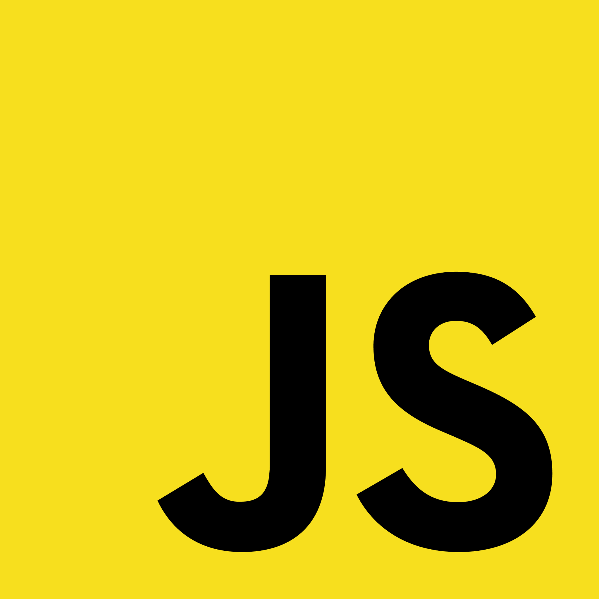
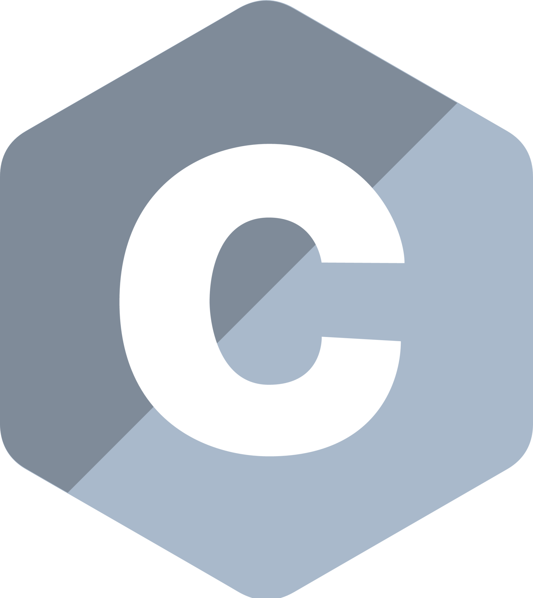
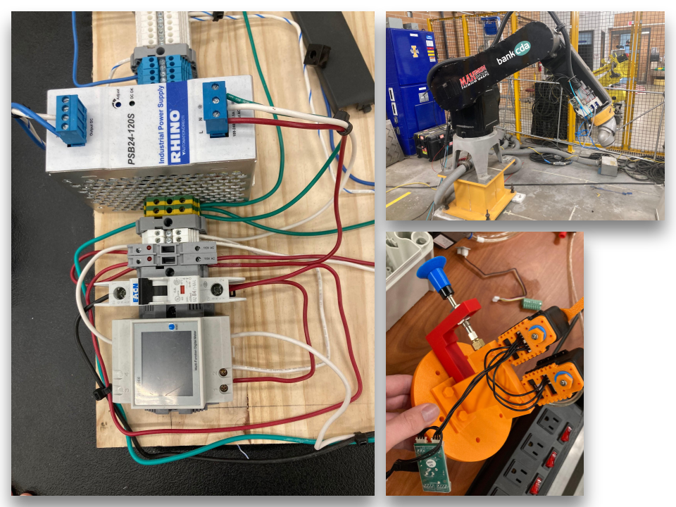
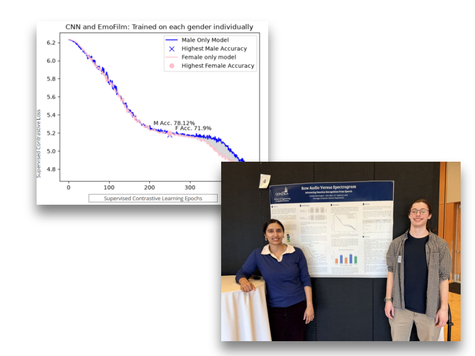
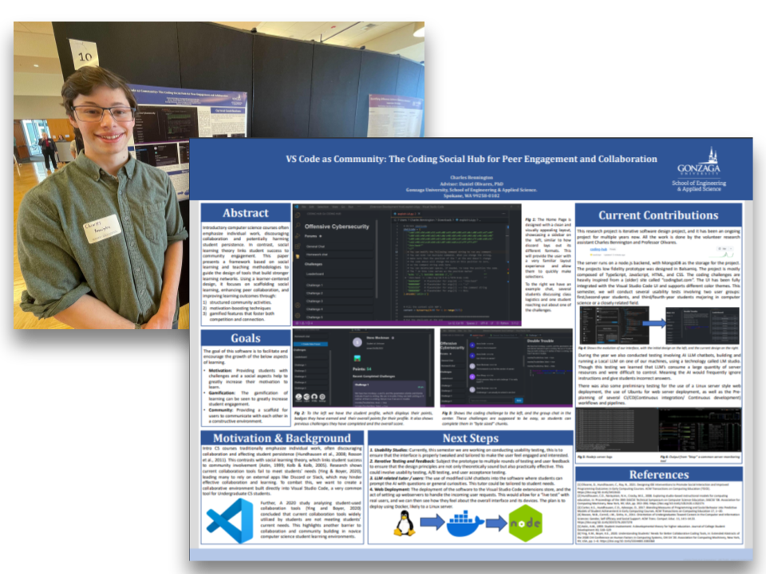
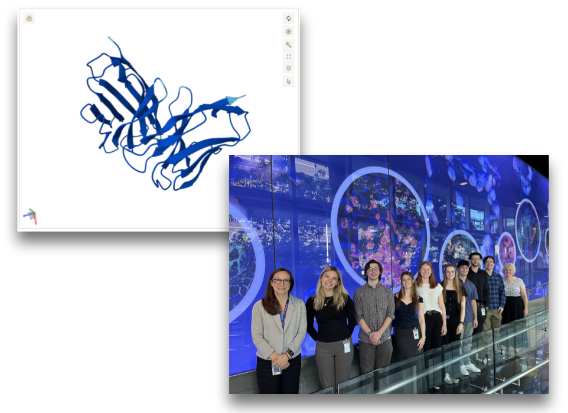
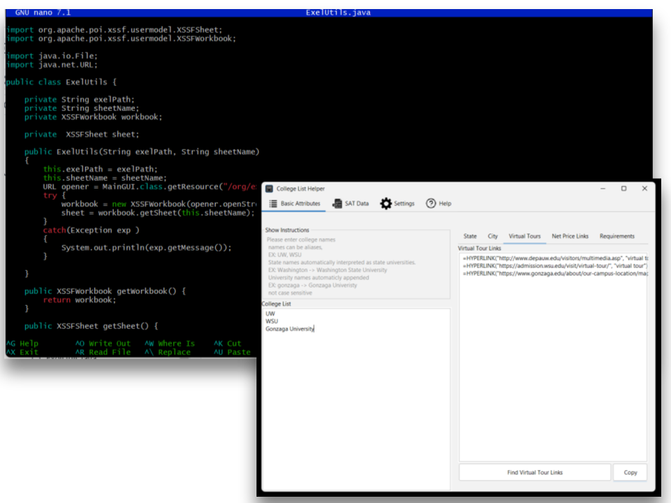

About Me
I am a 1st-year Ph.D. student in the Department of Computer Science at the University of Idaho, where I am part of the Center for Intelligent Industrial Robotics (CIIR) Lab. Before coming to UoI, I completed my B.S. in Computer Science at Gonzaga University.
My general research focuses on Manufacturing Automation, Robotics,and AI. Please check out my GitHub, it has information on my current projects.
Manufacturing Automation
Human Centered Design
Robotics
AI
Programming Languages


Work Experience
Teaching Assistant
August 2026 – Present • Coeur d'Alene, Idaho
- Design and build hands-on robotics lab exercises utilizing Fanuc CRX-10 and Fanuc LR Mate 200iD/50i platforms integrated with PLC hardware.
- Engineer pneumatic systems, execute industrial wiring, and perform routine maintenance, remodeling, and hardware repairs across lab equipment.
- Instruct undergraduate students in industrial automation fundamentals, guiding safety protocols and troubleshoot techniques during lab sessions.
- Assist faculty with facility management and continuous improvement of lab infrastructure.


AI Audio Engineer
June 2026 – August 2026 • Spokane, Washington
- Developed a custom CNN encoder architecture with a transformer backend for speech emotional recognition.
- Data stewardship and preprocessing for over 5,000 data label pairs.
- Research manuscript drafting and submission in LaTex.
- AI development and pipelining in python.
AI Research Assistant
August 2024 – June 2026 • Spokane, WA
- Gained practical experience with TypeScript, JavaScript, HTML, and CSS while building full-stack applications.
- Developed a custom Visual Studio Code extension aimed at improving student learning and productivity.
- Conducted thorough code reviews and strengthened authentication logic, remediating security vulnerabilities through secure coding practices, 20 code reviews completed, over 7,000 lines of code written.
- Applied HCI principles to design features for real-world users, integrating feedback loops from professors and students to inform design choices.
- Co-authored research papers and documentation summarizing findings, design rationales, and future research directions in collaboration with faculty and peers.
- Use critical thinking and problem solving to assist with conducting usability studies, as well as preparing usability study reports.


Computational Biologist Intern
May 2025 – August 2025 • Seattle, WA
- Developed a pipeline for computational deep mutational scanning in python.
- Integrated the above pipeline with statistical modeling to assess mutational impacts on protein stability for 300+ antibody sequence variants.
- Implemented machine learning models to predict protein folding stability.
- Participated in daily stand-ups and Agile cycles; analyzed over 290 pull request comments to support code review.
- Collaborated on projects using GitHub for version control, issue tracking, and peer code review.
Automation Intern
January 2024 – August 2024 • Spokane, WA
- Designed frontend and backend software, explored relevant projects and technologies.
- Earned reputation for being an active voice and organizer in team projects.
- Collaborating with C3's to develop a usable and efficient desktop application.
- Engineered automated data extraction scripts to streamline workflow processes, leveraging JAVA and RESTful APIs to enhance project turnaround and accuracy.

Publications
Peer-Reviewed Papers
Large Language Models in Programming: A Meta-Analysis of Tools, Users, and
Human-Computer Interaction Themes
AHFE International 2026.
Posters
Use of AlphaFold3 to predict single point mutations in anti-bodies.
UW Genomics REU showcase 2025, Seattle, WA.
VS Code as Community: The Coding Social Hub for Peer Engagement and
Collaboration.
SIRC 2025, Spokane, WA.
On Going Projects
DataFlippers: Intuitive Drag-and-Drop Block Programming for Novice Machine
Learning and Data Science
Targeting Journal of Open Source Software (JOSS) — Expected May 2026